<!DOCTYPE html
  PUBLIC "-//W3C//DTD HTML 4.01 Transitional//EN">

<html><html><body><div class="banner"><a href="../../../index.html"></a></div></body></html><head>
<meta content="text/html; charset=utf-8" http-equiv="Content-Type"/>
<!--
This HTML was auto-generated from MATLAB code.
To make changes, update the MATLAB code and republish this document.
      --><title>Nonlinear Timoshenko beam</title><meta content="MATLAB 9.14" name="generator"/><link href="http://purl.org/dc/elements/1.1/" rel="schema.DC"/><meta content="2023-09-01" name="DC.date"/><meta content="Timoshenko_Beam_with_IRs.m" name="DC.source"/><style type="text/css">
html,body,div,span,applet,object,iframe,h1,h2,h3,h4,h5,h6,p,blockquote,pre,a,abbr,acronym,address,big,cite,code,del,dfn,em,font,img,ins,kbd,q,s,samp,small,strike,strong,tt,var,b,u,i,center,dl,dt,dd,ol,ul,li,fieldset,form,label,legend,table,caption,tbody,tfoot,thead,tr,th,td{margin:0;padding:0;border:0;outline:0;font-size:100%;vertical-align:baseline;background:transparent}body{line-height:1}ol,ul{list-style:none}blockquote,q{quotes:none}blockquote:before,blockquote:after,q:before,q:after{content:'';content:none}:focus{outine:0}ins{text-decoration:none}del{text-decoration:line-through}table{border-collapse:collapse;border-spacing:0}

html { min-height:100%; margin-bottom:1px; }
html body { height:100%; margin:0px; font-family:Arial, Helvetica, sans-serif; font-size:10px; color:#000; line-height:140%; background:#fff none; overflow-y:scroll; }
html body td { vertical-align:top; text-align:left; }

h1 { padding:0px; margin:0px 0px 25px; font-family:Arial, Helvetica, sans-serif; font-size:1.5em; color:#d55000; line-height:100%; font-weight:normal; }
h2 { padding:0px; margin:0px 0px 8px; font-family:Arial, Helvetica, sans-serif; font-size:1.2em; color:#000; font-weight:bold; line-height:140%; border-bottom:1px solid #d6d4d4; display:block; }
h3 { padding:0px; margin:0px 0px 5px; font-family:Arial, Helvetica, sans-serif; font-size:1.1em; color:#000; font-weight:bold; line-height:140%; }

a { color:#005fce; text-decoration:none; }
a:hover { color:#005fce; text-decoration:underline; }
a:visited { color:#004aa0; text-decoration:none; }

p { padding:0px; margin:0px 0px 20px; }
img { padding:0px; margin:0px 0px 20px; border:none; }
p img, pre img, tt img, li img, h1 img, h2 img { margin-bottom:0px; }

ul { padding:0px; margin:0px 0px 20px 23px; list-style:square; }
ul li { padding:0px; margin:0px 0px 7px 0px; }
ul li ul { padding:5px 0px 0px; margin:0px 0px 7px 23px; }
ul li ol li { list-style:decimal; }
ol { padding:0px; margin:0px 0px 20px 0px; list-style:decimal; }
ol li { padding:0px; margin:0px 0px 7px 23px; list-style-type:decimal; }
ol li ol { padding:5px 0px 0px; margin:0px 0px 7px 0px; }
ol li ol li { list-style-type:lower-alpha; }
ol li ul { padding-top:7px; }
ol li ul li { list-style:square; }

.content { font-size:1.2em; line-height:140%; padding: 20px; }

pre, code { font-size:12px; }
tt { font-size: 1.2em; }
pre { margin:0px 0px 20px; }
pre.codeinput { padding:10px; border:1px solid #d3d3d3; background:#f7f7f7; }
pre.codeoutput { padding:10px 11px; margin:0px 0px 20px; color:#4c4c4c; }
pre.error { color:red; }

@media print { pre.codeinput, pre.codeoutput { word-wrap:break-word; width:100%; } }

span.keyword { color:#0000FF }
span.comment { color:#228B22 }
span.string { color:#A020F0 }
span.untermstring { color:#B20000 }
span.syscmd { color:#B28C00 }
span.typesection { color:#A0522D }

.footer { width:auto; padding:10px 0px; margin:25px 0px 0px; border-top:1px dotted #878787; font-size:0.8em; line-height:140%; font-style:italic; color:#878787; text-align:left; float:none; }
.footer p { margin:0px; }
.footer a { color:#878787; }
.footer a:hover { color:#878787; text-decoration:underline; }
.footer a:visited { color:#878787; }

table th { padding:7px 5px; text-align:left; vertical-align:middle; border: 1px solid #d6d4d4; font-weight:bold; }
table td { padding:7px 5px; text-align:left; vertical-align:top; border:1px solid #d6d4d4; }


  </style></head><body><div class="content"><h1>Nonlinear Timoshenko beam</h1><!--introduction--><!--/introduction--><h2>Contents</h2><div><ul><li><a href="#5">Primary resonance of the first mode</a></li></ul></div><p>We compute the FRC from a 4D-SSM for a geometrically nonlinear Timoshenko Beam.</p><pre class="codeinput">clear <span class="string">all</span>;
<span class="comment">% Generate model</span>

nElements = 4;
isViscoelastic = false;
[M,C,K,fnl,fext,outdof] = build_model(nElements,isViscoelastic);
n = length(M);

node_idx = nElements/4+1;
mDOFs = 5*(node_idx-1)-3+[1, 4]; <span class="comment">% translational DOFs</span>
rDOF = 5*(node_idx-1)-3+3;       <span class="comment">% rotational DOF</span>

Ma = M;
mass = 80;
moment_of_inertia = mass*250*250;
Ma(mDOFs,mDOFs) = Ma(mDOFs,mDOFs) + mass*eye(2,2); <span class="comment">% adding mass to translational DOF</span>
Ma(rDOF,rDOF)   = Ma(rDOF,rDOF)+moment_of_inertia;
<span class="comment">% Dynamical system setup</span>

DS = <a href="../../../Library/DynamicalSystem/DynamicalSystem.html">DynamicalSystem</a>();
set(DS,<span class="string">'M'</span>,Ma,<span class="string">'C'</span>,C,<span class="string">'K'</span>,K,<span class="string">'fnl'</span>,fnl);
set(DS.<a href="../../../Library/Features/Options/Options.html">Options</a>,<span class="string">'Emax'</span>,5,<span class="string">'Nmax'</span>,10,<span class="string">'notation'</span>,<span class="string">'multiindex'</span>)
epsilon = 7e-4;
kappas = [-1; 1];
coeffs = [fext fext]/2;
DS.<a href="../../../Library/DynamicalSystem/add_forcing.html">add_forcing</a>(coeffs, kappas, epsilon);
<span class="comment">% Linear Modal analysis and SSM setup</span>

[V,D,W] = DS.<a href="../../../Library/DynamicalSystem/linear_spectral_analysis.html">linear_spectral_analysis</a>();
</pre><pre class="codeoutput">Due to high-dimensionality, we compute only the first 5 eigenvalues with the smallest magnitude. These would also be used to compute the spectral quotients
Assuming a proportional damping hypthesis with symmetric matrices
modal damping ratio for 1 mode is 1.686725e-04
modal damping ratio for 2 mode is 5.409783e-04
modal damping ratio for 3 mode is 3.025786e-03
modal damping ratio for 4 mode is 6.645833e-03
modal damping ratio for 5 mode is 5.445036e-03

 The first 10 nonzero eigenvalues are given as 
  -0.0004 + 2.2562i
  -0.0004 - 2.2562i
  -0.0039 + 7.2301i
  -0.0039 - 7.2301i
  -0.1206 +39.8735i
  -0.1206 -39.8735i
  -0.3679 +55.3614i
  -0.3679 -55.3614i
  -0.3968 +72.8771i
  -0.3968 -72.8771i

</pre><p><b>Choose Master subspace</b></p><pre class="codeinput">S = <a href="../../../Library/SSM/SSM.html">SSM</a>(DS);
set(S.<a href="../../../Library/Features/Options/Options.html">Options</a>, <span class="string">'reltol'</span>, 0.1,<span class="string">'notation'</span>,<span class="string">'multiindex'</span>)
masterModes = [1,2,3,4];
S.<a href="../../../Library/Manifold/choose_E.html">choose_E</a>(masterModes);
<span class="comment">% Forced response curves using SSMs</span>
</pre><pre class="codeoutput">No (near) outer resonances detected in the (truncated) spectrum
sigma_out = 1042
(near) inner resonance detected for the following combination of master eigenvalues
     1     0     1     1
     2     1     0     0
     1     0     2     2
     2     1     1     1
     3     2     0     0
     1     0     3     3
     2     1     2     2
     3     2     1     1
     4     3     0     0
     1     0     4     4
     2     1     3     3
     3     2     2     2
     4     3     1     1
     5     4     0     0
     0     1     1     1
     1     2     0     0
     0     1     2     2
     1     2     1     1
     2     3     0     0
     0     1     3     3
     1     2     2     2
     2     3     1     1
     3     4     0     0
     0     1     4     4
     1     2     3     3
     2     3     2     2
     3     4     1     1
     4     5     0     0
     0     0     2     1
     1     1     1     0
     0     0     3     2
     1     1     2     1
     2     2     1     0
     0     0     4     3
     1     1     3     2
     2     2     2     1
     3     3     1     0
     0     0     5     4
     1     1     4     3
     2     2     3     2
     3     3     2     1
     4     4     1     0
     0     0     1     2
     1     1     0     1
     0     0     2     3
     1     1     1     2
     2     2     0     1
     0     0     3     4
     1     1     2     3
     2     2     1     2
     3     3     0     1
     0     0     4     5
     1     1     3     4
     2     2     2     3
     3     3     1     2
     4     4     0     1

These are in resonance with the follwing eigenvalues of the master subspace
  -0.0004 + 2.2562i
  -0.0004 + 2.2562i
  -0.0004 + 2.2562i
  -0.0004 + 2.2562i
  -0.0004 + 2.2562i
  -0.0004 + 2.2562i
  -0.0004 + 2.2562i
  -0.0004 + 2.2562i
  -0.0004 + 2.2562i
  -0.0004 + 2.2562i
  -0.0004 + 2.2562i
  -0.0004 + 2.2562i
  -0.0004 + 2.2562i
  -0.0004 + 2.2562i
  -0.0004 - 2.2562i
  -0.0004 - 2.2562i
  -0.0004 - 2.2562i
  -0.0004 - 2.2562i
  -0.0004 - 2.2562i
  -0.0004 - 2.2562i
  -0.0004 - 2.2562i
  -0.0004 - 2.2562i
  -0.0004 - 2.2562i
  -0.0004 - 2.2562i
  -0.0004 - 2.2562i
  -0.0004 - 2.2562i
  -0.0004 - 2.2562i
  -0.0004 - 2.2562i
  -0.0039 + 7.2301i
  -0.0039 + 7.2301i
  -0.0039 + 7.2301i
  -0.0039 + 7.2301i
  -0.0039 + 7.2301i
  -0.0039 + 7.2301i
  -0.0039 + 7.2301i
  -0.0039 + 7.2301i
  -0.0039 + 7.2301i
  -0.0039 + 7.2301i
  -0.0039 + 7.2301i
  -0.0039 + 7.2301i
  -0.0039 + 7.2301i
  -0.0039 + 7.2301i
  -0.0039 - 7.2301i
  -0.0039 - 7.2301i
  -0.0039 - 7.2301i
  -0.0039 - 7.2301i
  -0.0039 - 7.2301i
  -0.0039 - 7.2301i
  -0.0039 - 7.2301i
  -0.0039 - 7.2301i
  -0.0039 - 7.2301i
  -0.0039 - 7.2301i
  -0.0039 - 7.2301i
  -0.0039 - 7.2301i
  -0.0039 - 7.2301i
  -0.0039 - 7.2301i

sigma_in = 1042
</pre><p>Setup options</p><pre class="codeinput">set(S.<a href="../../../Library/Features/Options/Options.html">Options</a>, <span class="string">'reltol'</span>, 0.5,<span class="string">'IRtol'</span>,0.08,<span class="string">'notation'</span>, <span class="string">'multiindex'</span>,<span class="string">'contribNonAuto'</span>,true)
set(S.<a href="../../../Library/Features/Options/Options.html">FRCOptions</a>, <span class="string">'nt'</span>, 2^8, <span class="string">'nRho'</span>, 200, <span class="string">'nPar'</span>, 200, <span class="string">'nPsi'</span>, 100, <span class="string">'rhoScale'</span>, 2 )
set(S.contOptions, <span class="string">'h_max'</span>, 10,<span class="string">'PtMX'</span>,350,<span class="string">'h_min'</span>,1e-3);
set(S.<a href="../../../Library/Features/Options/Options.html">FRCOptions</a>, <span class="string">'outdof'</span>,outdof+1)
</pre><p>Choose frequency range</p><pre class="codeinput">omegaRange = [2.1, 2.7];
</pre><h2 id="5">Primary resonance of the first mode</h2><p>We first consider the case that .</p><pre class="codeinput">set(S.<a href="../../../Library/Features/Options/Options.html">FRCOptions</a>, <span class="string">'nCycle'</span>,500, <span class="string">'initialSolver'</span>, <span class="string">'fsolve'</span>);
set(S.<a href="../../../Library/Features/Options/Options.html">FRCOptions</a>, <span class="string">'coordinates'</span>, <span class="string">'polar'</span>);

<span class="comment">% computation at order 3</span>
order = 3; <span class="comment">% Approximation order</span>
start = tic;
FRC_LD_O3 = S.<a href="../../../Library/SSM/SSM_isol2ep.html">SSM_isol2ep</a>(<span class="string">'isol-ld-3'</span>,masterModes, order, [1 3], <span class="string">'freq'</span>, omegaRange,outdof+1);
timings.FRC_ND_O3 = toc(start);

<span class="comment">% increase order to check convergence</span>
sol = ep_read_solution(<span class="string">'isol-ld-3.ep'</span>,1);
start = tic;
FRC_LD_O5 = S.<a href="../../../Library/SSM/SSM_isol2ep.html">SSM_isol2ep</a>(<span class="string">'isol-ld-5'</span>,masterModes, order+2, [1 3],<span class="keyword">...</span>
    <span class="string">'freq'</span>, omegaRange,outdof+1,{sol.p,sol.x});
timings.FRC_ND_O5 = toc(start);

start = tic;
FRC_LD_O7 = S.<a href="../../../Library/SSM/SSM_isol2ep.html">SSM_isol2ep</a>(<span class="string">'isol-ld-7'</span>,masterModes, order+4, [1 3],<span class="keyword">...</span>
    <span class="string">'freq'</span>, omegaRange,outdof+1,{sol.p,sol.x});
timings.FRC_ND_O7 = toc(start);

start = tic;
FRC_LD_O9 = S.<a href="../../../Library/SSM/SSM_isol2ep.html">SSM_isol2ep</a>(<span class="string">'isol-ld-9'</span>,masterModes, order+6, [1 3],<span class="keyword">...</span>
    <span class="string">'freq'</span>, omegaRange,outdof+1,{sol.p,sol.x});
timings.FRC_ND_O9 = toc(start);

FRC_LD_O11 = S.<a href="../../../Library/SSM/SSM_isol2ep.html">SSM_isol2ep</a>(<span class="string">'isol-ld-11'</span>,masterModes, order+8, [1 3],<span class="keyword">...</span>
    <span class="string">'freq'</span>, omegaRange,outdof+1,{sol.p,sol.x});
timings.FRC_ND_O9 = toc(start);

<span class="comment">% plot results at the same figure</span>
FRCs = {FRC_LD_O3,FRC_LD_O5,FRC_LD_O7,FRC_LD_O9,FRC_LD_O11};
thm = struct();
thm.SN = {<span class="string">'LineStyle'</span>, <span class="string">'none'</span>, <span class="string">'LineWidth'</span>, 2, <span class="keyword">...</span>
  <span class="string">'Color'</span>, <span class="string">'cyan'</span>, <span class="string">'Marker'</span>, <span class="string">'o'</span>, <span class="string">'MarkerSize'</span>, 8, <span class="string">'MarkerEdgeColor'</span>, <span class="keyword">...</span>
  <span class="string">'cyan'</span>, <span class="string">'MarkerFaceColor'</span>, <span class="string">'white'</span>};
thm.HB = {<span class="string">'LineStyle'</span>, <span class="string">'none'</span>, <span class="string">'LineWidth'</span>, 2, <span class="keyword">...</span>
  <span class="string">'Color'</span>, <span class="string">'black'</span>, <span class="string">'Marker'</span>, <span class="string">'s'</span>, <span class="string">'MarkerSize'</span>, 8, <span class="string">'MarkerEdgeColor'</span>, <span class="keyword">...</span>
  <span class="string">'black'</span>, <span class="string">'MarkerFaceColor'</span>, <span class="string">'white'</span>};
color = {<span class="string">'r'</span>,<span class="string">'k'</span>,<span class="string">'m'</span>,<span class="string">'b'</span>,<span class="string">'g'</span>};
figure(30);
ax1 = gca;
<span class="keyword">for</span> k=1:5
    FRC = FRCs{k};
    SNidx = FRC.SNidx;
    HBidx = FRC.HBidx;
    FRC.st = double(FRC.st);
    FRC.st(HBidx) = nan;
    FRC.st(SNidx) = nan;
    <span class="comment">% color</span>
    ST = cell(2,1);
    ST{1} = {[color{k},<span class="string">'--'</span>],<span class="string">'LineWidth'</span>,1.5}; <span class="comment">% unstable</span>
    ST{2} = {[color{k},<span class="string">'-'</span>],<span class="string">'LineWidth'</span>,1.5};  <span class="comment">% stable</span>
    legs = [<span class="string">'SSM-$\mathcal{O}('</span>,num2str(2*k+1),<span class="string">')$-unstable'</span>];
    legu = [<span class="string">'SSM-$\mathcal{O}('</span>,num2str(2*k+1),<span class="string">')$-stable'</span>];
    hold(ax1,<span class="string">'on'</span>);
    <a href="../../../Library/Features/misc/plot_stab_lines.html">plot_stab_lines</a>(FRC.om,FRC.Aout_<a href="../../../Library/Features/frc/frc.html">frc</a>(:,1),FRC.st,ST,legs,legu);
    SNfig = plot(FRC.om(SNidx),FRC.Aout_<a href="../../../Library/Features/frc/frc.html">frc</a>(SNidx,1),thm.SN{:});
    set(get(get(SNfig,<span class="string">'Annotation'</span>),<span class="string">'LegendInformation'</span>),<span class="keyword">...</span>
    <span class="string">'IconDisplayStyle'</span>,<span class="string">'off'</span>);
    HBfig = plot(FRC.om(HBidx),FRC.Aout_<a href="../../../Library/Features/frc/frc.html">frc</a>(HBidx,1),thm.HB{:});
    set(get(get(HBfig,<span class="string">'Annotation'</span>),<span class="string">'LegendInformation'</span>),<span class="keyword">...</span>
    <span class="string">'IconDisplayStyle'</span>,<span class="string">'off'</span>);
    xlabel(<span class="string">'$\Omega$'</span>,<span class="string">'Interpreter'</span>,<span class="string">'latex'</span>);
    ylabel(<span class="string">'$||u_1||_{\infty}$'</span>,<span class="string">'Interpreter'</span>,<span class="string">'latex'</span>);
    set(gca,<span class="string">'FontSize'</span>,14);
    grid <span class="string">on</span>; axis <span class="string">tight</span>;
<span class="keyword">end</span>
</pre><h2>FRC from Order 3 SSM Computation</h2>
<pre class="codeoutput">(near) outer resonance detected for the following combination of master eigenvalues
     2     0     5     0
     0     2     6     0
     2     0     6     1
     3     1     5     0
     5     0     4     0
     0     2     7     1
     1     3     6     0
     0     2     0     5
     2     0     0     6
     0     2     1     6
     0     5     0     4
     1     3     0     5
     2     0     1     7
     3     1     0     6
     0     1     8     0
     2     0     7     0
     0     2     0     7
     1     0     0     8
     0     0    10     0
     0     0     0    10

These are in resonance with the follwing eigenvalues of the slave subspace
  -0.1206 +39.8735i
  -0.1206 +39.8735i
  -0.1206 +39.8735i
  -0.1206 +39.8735i
  -0.1206 +39.8735i
  -0.1206 +39.8735i
  -0.1206 +39.8735i
  -0.1206 -39.8735i
  -0.1206 -39.8735i
  -0.1206 -39.8735i
  -0.1206 -39.8735i
  -0.1206 -39.8735i
  -0.1206 -39.8735i
  -0.1206 -39.8735i
  -0.3679 +55.3614i
  -0.3679 +55.3614i
  -0.3679 -55.3614i
  -0.3679 -55.3614i
  -0.3968 +72.8771i
  -0.3968 -72.8771i

sigma_out = 1042
(near) inner resonance detected for the following combination of master eigenvalues
     0     2     1     0
     1     0     1     1
     2     1     0     0
     ...

These are in resonance with the follwing eigenvalues of the master subspace
  -0.0004 + 2.2562i
  -0.0004 + 2.2562i
  -0.0004 + 2.2562i
   ...
sigma_in = 1042
Due to (near) outer resonance, the exisitence of the manifold is questionable and the underlying computation may suffer.
Attempting manifold computation
Manifold computation time at order 2 = 00:00:00
Estimated memory usage at order  2 = 7.38E-02 MB
Manifold computation time at order 3 = 00:00:00
Estimated memory usage at order  3 = 1.36E-01 MB

Equation solved.

fsolve completed because the vector of function values is near zero
as measured by the value of the function tolerance, and
the problem appears regular as measured by the gradient.


 Run='isol-ld-3.ep': Continue equilibria along primary branch.

    STEP   DAMPING               NORMS              COMPUTATION TIMES
  IT SIT     GAMMA     ||d||     ||f||     ||U||   F(x)  DF(x)  SOLVE
   0                          1.56e-12  6.56e+02    0.0    0.0    0.0

 STEP      TIME        ||U||  LABEL  TYPE            om         rho1         rho2          th1          th2          eps
    0  00:00:00   6.5607e+02      1  EP      2.2562e+00   4.6366e+02   1.3636e+01   5.8896e+00   2.4416e+00   7.0000e-04
   10  00:00:00   6.1737e+02      2          2.2421e+00   4.3634e+02   1.1523e+01   5.9540e+00   2.6677e+00   7.0000e-04
   20  00:00:00   5.1749e+02      3          2.2058e+00   3.6578e+02   6.8901e+00   6.0848e+00   3.1417e+00   7.0000e-04
   30  00:00:00   4.1757e+02      4          2.1663e+00   2.9515e+02   3.5288e+00   6.1752e+00   3.4858e+00   7.0000e-04
   40  00:00:00   3.1764e+02      5          2.1159e+00   2.2448e+02   1.4274e+00   6.2335e+00   3.7197e+00   7.0000e-04
   43  00:00:01   2.9282e+02      6  EP      2.1000e+00   2.0691e+02   1.0811e+00   6.2437e+00   3.7624e+00   7.0000e-04

 STEP      TIME        ||U||  LABEL  TYPE            om         rho1         rho2          th1          th2          eps
    0  00:00:01   6.5607e+02      7  EP      2.2562e+00   4.6366e+02   1.3636e+01   5.8896e+00   2.4416e+00   7.0000e-04
   10  00:00:01   6.9477e+02      8          2.2706e+00   4.9097e+02   1.5912e+01   5.8155e+00   2.1860e+00   7.0000e-04
   20  00:00:01   7.9458e+02      9          2.3107e+00   5.6137e+02   2.2502e+01   5.5610e+00   1.3351e+00   7.0000e-04
   30  00:00:01   8.9430e+02     10          2.3636e+00   6.3160e+02   3.0508e+01   5.0803e+00  -2.0529e-01   7.0000e-04
   40  00:00:01   9.1513e+02     11          2.3881e+00   6.4621e+02   3.3317e+01   4.7300e+00  -1.2969e+00   7.0000e-04
   50  00:00:01   9.1515e+02     12          2.3894e+00   6.4622e+02   3.3421e+01   4.7066e+00  -1.3692e+00   7.0000e-04
   60  00:00:01   9.1490e+02     13          2.3910e+00   6.4604e+02   3.3549e+01   4.6743e+00  -1.4687e+00   7.0000e-04
   70  00:00:01   9.0223e+02     14          2.4007e+00   6.3705e+02   3.3871e+01   4.4263e+00  -2.2291e+00   7.0000e-04
   76  00:00:01   8.5198e+02     15  FP      2.4055e+00   6.0154e+02   3.2330e+01   4.0841e+00  -3.2637e+00   7.0000e-04
   76  00:00:01   8.5197e+02     16  SN      2.4055e+00   6.0154e+02   3.2329e+01   4.0841e+00  -3.2638e+00   7.0000e-04
   80  00:00:01   8.1117e+02     17          2.4044e+00   5.7273e+02   3.0623e+01   3.9153e+00  -3.7672e+00   7.0000e-04
   90  00:00:01   7.1120e+02     18          2.3984e+00   5.0218e+02   2.6027e+01   3.6330e+00  -4.5946e+00   7.0000e-04
  100  00:00:02   6.1123e+02     19          2.3936e+00   4.3162e+02   2.1406e+01   3.4470e+00  -5.1266e+00   7.0000e-04
  105  00:00:02   5.6565e+02     20  SN      2.3930e+00   3.9945e+02   1.9425e+01   3.3829e+00  -5.3082e+00   7.0000e-04
  110  00:00:02   5.1125e+02     21          2.3941e+00   3.6103e+02   1.7274e+01   3.3198e+00  -5.4901e+00   7.0000e-04
  120  00:00:02   4.1129e+02     22          2.4041e+00   2.9038e+02   1.4586e+01   3.2353e+00  -5.7821e+00   7.0000e-04
  130  00:00:02   3.1217e+02     23          2.4315e+00   2.1985e+02   1.8191e+01   3.1923e+00  -6.5347e+00   7.0000e-04
  140  00:00:02   2.5072e+02     24          2.4664e+00   1.7696e+02   5.6859e+00   3.1719e+00  -8.1591e+00   7.0000e-04
  150  00:00:02   1.5172e+02     25          2.5906e+00   1.0686e+02   2.8871e-01   3.1481e+00  -8.5721e+00   7.0000e-04
  154  00:00:02   1.1390e+02     26  EP      2.7000e+00   7.9973e+01   7.3467e-02   3.1447e+00  -8.6039e+00   7.0000e-04

the forcing frequency 2.1000e+00 is nearly resonant with the eigenvalue -3.8056e-04 + i2.2562e+00
the forcing frequency 2.1033e+00 is nearly resonant with the eigenvalue -3.8056e-04 + i2.2562e+00
the forcing frequency 2.1098e+00 is nearly resonant with the eigenvalue -3.8056e-04 + i2.2562e+00
...

</pre>
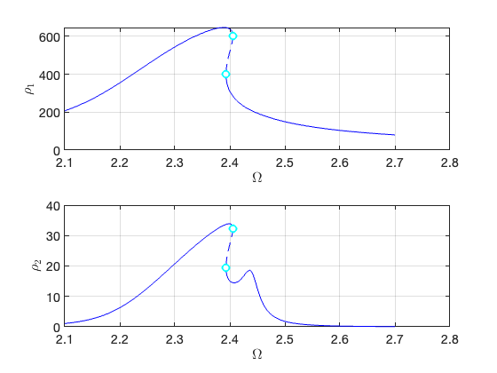 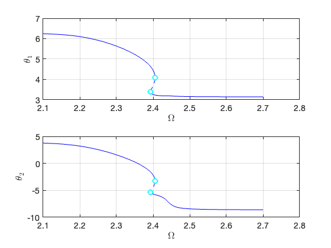 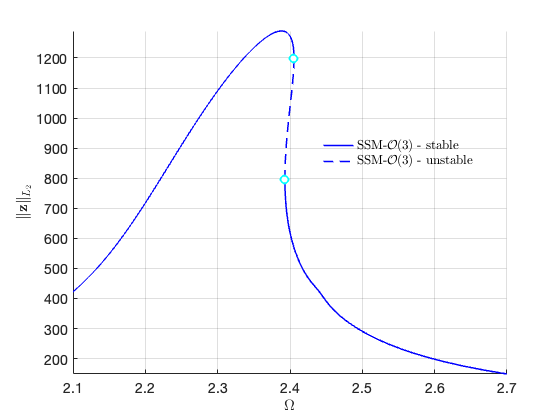 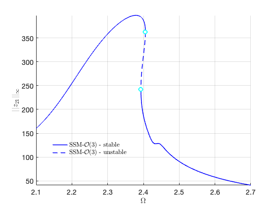
<h2>FRC from Order 5 SSM Computation</h2>
<pre class="codeoutput">

Due to (near) outer resonance, the exisitence of the manifold is questionable and the underlying computation may suffer.
Attempting manifold computation
Manifold computation time at order 2 = 00:00:00
Estimated memory usage at order  2 = 7.60E-02 MB
Manifold computation time at order 3 = 00:00:00
Estimated memory usage at order  3 = 1.38E-01 MB
Manifold computation time at order 4 = 00:00:00
Estimated memory usage at order  4 = 2.99E-01 MB
Manifold computation time at order 5 = 00:00:00
Estimated memory usage at order  5 = 5.54E-01 MB

Equation solved.

fsolve completed because the vector of function values is near zero
as measured by the value of the function tolerance, and
the problem appears regular as measured by the gradient.


 Run='isol-ld-5.ep': Continue equilibria along primary branch.

    STEP   DAMPING               NORMS              COMPUTATION TIMES
  IT SIT     GAMMA     ||d||     ||f||     ||U||   F(x)  DF(x)  SOLVE
   0                          1.15e-13  6.53e+02    0.0    0.0    0.0

 STEP      TIME        ||U||  LABEL  TYPE            om         rho1         rho2          th1          th2          eps
    0  00:00:00   6.5305e+02      1  EP      2.2562e+00   4.6150e+02   1.4347e+01   5.9383e+00   2.5623e+00   7.0000e-04
   10  00:00:00   6.1436e+02      2          2.2420e+00   4.3419e+02   1.1995e+01   5.9905e+00   2.7540e+00   7.0000e-04
   20  00:00:00   5.1449e+02      3          2.2052e+00   3.6366e+02   7.0021e+00   6.1015e+00   3.1739e+00   7.0000e-04
   30  00:00:00   4.1458e+02      4          2.1652e+00   2.9304e+02   3.5161e+00   6.1822e+00   3.4940e+00   7.0000e-04
   40  00:00:00   3.1466e+02      5          2.1142e+00   2.2236e+02   1.3965e+00   6.2361e+00   3.7196e+00   7.0000e-04
   43  00:00:00   2.9273e+02      6  EP      2.1000e+00   2.0685e+02   1.0894e+00   6.2447e+00   3.7570e+00   7.0000e-04

 STEP      TIME        ||U||  LABEL  TYPE            om         rho1         rho2          th1          th2          eps
    0  00:00:00   6.5305e+02      7  EP      2.2562e+00   4.6150e+02   1.4347e+01   5.9383e+00   2.5623e+00   7.0000e-04
   10  00:00:00   6.9172e+02      8          2.2707e+00   4.8878e+02   1.6935e+01   5.8802e+00   2.3529e+00   7.0000e-04
   20  00:00:00   7.9145e+02      9          2.3103e+00   5.5906e+02   2.4728e+01   5.6988e+00   1.7163e+00   7.0000e-04
   30  00:00:00   8.9106e+02     10          2.3553e+00   6.2911e+02   3.4278e+01   5.4533e+00   8.8552e-01   7.0000e-04
   40  00:00:00   9.9042e+02     11          2.4112e+00   6.9878e+02   4.6246e+01   5.0565e+00  -4.0768e-01   7.0000e-04
   50  00:00:00   1.0194e+03     12          2.4394e+00   7.1896e+02   5.1438e+01   4.7113e+00  -1.4927e+00   7.0000e-04
   60  00:00:00   1.0194e+03     13          2.4402e+00   7.1894e+02   5.1537e+01   4.6941e+00  -1.5458e+00   7.0000e-04
   70  00:00:01   1.0189e+03     14          2.4417e+00   7.1860e+02   5.1684e+01   4.6607e+00  -1.6486e+00   7.0000e-04
   79  00:00:01   1.0023e+03     15  SN      2.4460e+00   7.0687e+02   5.1152e+01   4.4395e+00  -2.3212e+00   7.0000e-04
   79  00:00:01   1.0023e+03     16  FP      2.4460e+00   7.0685e+02   5.1150e+01   4.4393e+00  -2.3220e+00   7.0000e-04
   80  00:00:01   9.8406e+02     17          2.4449e+00   6.9402e+02   4.9861e+01   4.3215e+00  -2.6742e+00   7.0000e-04
   90  00:00:01   8.8417e+02     18          2.4295e+00   6.2376e+02   4.1949e+01   3.9447e+00  -3.7763e+00   7.0000e-04
  100  00:00:01   7.8427e+02     19          2.4139e+00   5.5346e+02   3.4436e+01   3.7022e+00  -4.4651e+00   7.0000e-04
  110  00:00:01   6.8435e+02     20          2.4020e+00   4.8307e+02   2.7681e+01   3.5212e+00  -4.9659e+00   7.0000e-04
  120  00:00:01   5.8441e+02     21          2.3955e+00   4.1261e+02   2.1828e+01   3.3845e+00  -5.3363e+00   7.0000e-04
  124  00:00:01   5.4566e+02     22  SN      2.3948e+00   3.8527e+02   1.9855e+01   3.3417e+00  -5.4528e+00   7.0000e-04
  130  00:00:01   4.8444e+02     23          2.3966e+00   3.4205e+02   1.7189e+01   3.2845e+00  -5.6160e+00   7.0000e-04
  140  00:00:01   3.8451e+02     24          2.4097e+00   2.7138e+02   1.4967e+01   3.2159e+00  -5.8988e+00   7.0000e-04
  150  00:00:01   2.9235e+02     25          2.4413e+00   2.0579e+02   1.7831e+01   3.1924e+00  -7.1626e+00   7.0000e-04
  160  00:00:01   2.1775e+02     26          2.4941e+00   1.5367e+02   2.1219e+00   3.1599e+00  -8.4160e+00   7.0000e-04
  170  00:00:02   1.1817e+02     27          2.6840e+00   8.3009e+01   8.7221e-02   3.1450e+00  -8.6029e+00   7.0000e-04
  171  00:00:02   1.1390e+02     28  EP      2.7000e+00   7.9973e+01   7.3553e-02   3.1447e+00  -8.6053e+00   7.0000e-04

the forcing frequency 2.1000e+00 is nearly resonant with the eigenvalue -3.8056e-04 + i2.2562e+00
the forcing frequency 2.1013e+00 is nearly resonant with the eigenvalue -3.8056e-04 + i2.2562e+00
the forcing frequency 2.1079e+00 is nearly resonant with the eigenvalue -3.8056e-04 + i2.2562e+00

</pre>
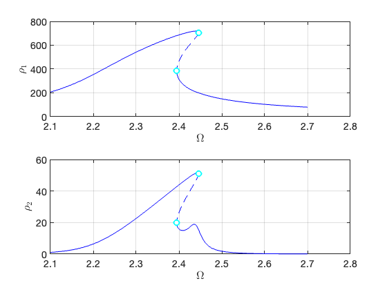 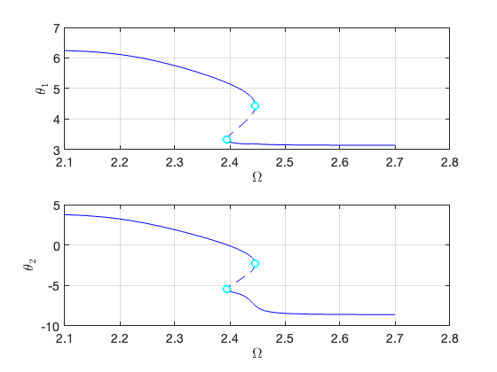 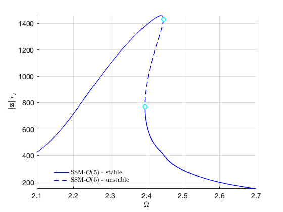 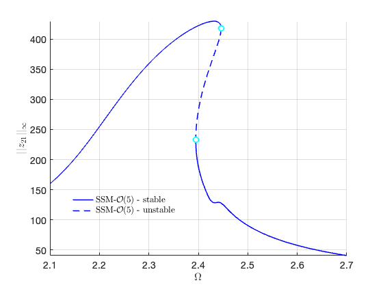
<h2>FRC from Order 7 SSM Computation</h2>
<pre class="codeoutput">


Due to (near) outer resonance, the exisitence of the manifold is questionable and the underlying computation may suffer.
Attempting manifold computation
Manifold computation time at order 2 = 00:00:00
Estimated memory usage at order  2 = 7.99E-02 MB
Manifold computation time at order 3 = 00:00:00
Estimated memory usage at order  3 = 1.42E-01 MB
Manifold computation time at order 4 = 00:00:00
Estimated memory usage at order  4 = 3.02E-01 MB
Manifold computation time at order 5 = 00:00:00
Estimated memory usage at order  5 = 5.58E-01 MB
Manifold computation time at order 6 = 00:00:00
Estimated memory usage at order  6 = 1.03E+00 MB
Manifold computation time at order 7 = 00:00:00
Estimated memory usage at order  7 = 1.74E+00 MB

Equation solved.

fsolve completed because the vector of function values is near zero
as measured by the value of the function tolerance, and
the problem appears regular as measured by the gradient.


 Run='isol-ld-7.ep': Continue equilibria along primary branch.

    STEP   DAMPING               NORMS              COMPUTATION TIMES
  IT SIT     GAMMA     ||d||     ||f||     ||U||   F(x)  DF(x)  SOLVE
   0                          3.81e-12  6.51e+02    0.0    0.0    0.0

 STEP      TIME        ||U||  LABEL  TYPE            om         rho1         rho2          th1          th2          eps
    0  00:00:00   6.5141e+02      1  EP      2.2562e+00   4.6034e+02   1.4350e+01   5.9319e+00   2.5456e+00   7.0000e-04
   10  00:00:00   6.1272e+02      2          2.2418e+00   4.3304e+02   1.1975e+01   5.9868e+00   2.7457e+00   7.0000e-04
   20  00:00:00   5.1286e+02      3          2.2048e+00   3.6251e+02   6.9575e+00   6.1013e+00   3.1757e+00   7.0000e-04
   30  00:00:00   4.1295e+02      4          2.1645e+00   2.9189e+02   3.4766e+00   6.1828e+00   3.4979e+00   7.0000e-04
   40  00:00:00   3.1302e+02      5          2.1132e+00   2.2121e+02   1.3726e+00   6.2367e+00   3.7227e+00   7.0000e-04
   43  00:00:00   2.9273e+02      6  EP      2.1000e+00   2.0685e+02   1.0898e+00   6.2446e+00   3.7571e+00   7.0000e-04

 STEP      TIME        ||U||  LABEL  TYPE            om         rho1         rho2          th1          th2          eps
    0  00:00:00   6.5141e+02      7  EP      2.2562e+00   4.6034e+02   1.4350e+01   5.9319e+00   2.5456e+00   7.0000e-04
   10  00:00:00   6.9008e+02      8          2.2709e+00   4.8762e+02   1.6968e+01   5.8698e+00   2.3236e+00   7.0000e-04
   20  00:00:00   7.8980e+02      9          2.3115e+00   5.5788e+02   2.4888e+01   5.6661e+00   1.6179e+00   7.0000e-04
   30  00:00:00   8.8937e+02     10          2.3598e+00   6.2789e+02   3.4725e+01   5.3474e+00   5.6111e-01   7.0000e-04
   40  00:00:00   9.5641e+02     11          2.4118e+00   6.7483e+02   4.4019e+01   4.7794e+00  -1.2389e+00   7.0000e-04
   50  00:00:00   9.5693e+02     12          2.4151e+00   6.7517e+02   4.4405e+01   4.7189e+00  -1.4262e+00   7.0000e-04
   60  00:00:00   9.5678e+02     13          2.4164e+00   6.7505e+02   4.4544e+01   4.6913e+00  -1.5113e+00   7.0000e-04
   70  00:00:01   9.5354e+02     14          2.4211e+00   6.7274e+02   4.4866e+01   4.5769e+00  -1.8630e+00   7.0000e-04
   76  00:00:01   9.2267e+02     15  FP      2.4265e+00   6.5094e+02   4.3647e+01   4.2634e+00  -2.8132e+00   7.0000e-04
   76  00:00:01   9.2264e+02     16  SN      2.4265e+00   6.5092e+02   4.3645e+01   4.2632e+00  -2.8137e+00   7.0000e-04
   80  00:00:01   8.7949e+02     17          2.4239e+00   6.2052e+02   4.0858e+01   4.0420e+00  -3.4715e+00   7.0000e-04
   90  00:00:01   7.7957e+02     18          2.4121e+00   5.5016e+02   3.3933e+01   3.7285e+00  -4.3806e+00   7.0000e-04
  100  00:00:01   6.7965e+02     19          2.4013e+00   4.7976e+02   2.7370e+01   3.5259e+00  -4.9488e+00   7.0000e-04
  110  00:00:01   5.7970e+02     20          2.3953e+00   4.0929e+02   2.1594e+01   3.3828e+00  -5.3398e+00   7.0000e-04
  114  00:00:01   5.4616e+02     21  SN      2.3948e+00   3.8562e+02   1.9895e+01   3.3447e+00  -5.4440e+00   7.0000e-04
  120  00:00:01   4.7973e+02     22          2.3969e+00   3.3872e+02   1.7022e+01   3.2815e+00  -5.6250e+00   7.0000e-04
  130  00:00:01   3.7981e+02     23          2.4107e+00   2.6805e+02   1.4993e+01   3.2136e+00  -5.9169e+00   7.0000e-04
  140  00:00:01   2.9310e+02     24          2.4409e+00   2.0631e+02   1.7992e+01   3.1926e+00  -7.1344e+00   7.0000e-04
  150  00:00:01   2.2058e+02     25          2.4913e+00   1.5568e+02   2.3056e+00   3.1606e+00  -8.4024e+00   7.0000e-04
  160  00:00:01   1.2099e+02     26          2.6741e+00   8.5020e+01   9.7388e-02   3.1452e+00  -8.6011e+00   7.0000e-04
  161  00:00:01   1.1390e+02     27  EP      2.7000e+00   7.9973e+01   7.3554e-02   3.1447e+00  -8.6053e+00   7.0000e-04

the forcing frequency 2.1000e+00 is nearly resonant with the eigenvalue -3.8056e-04 + i2.2562e+00
the forcing frequency 2.1002e+00 is nearly resonant with the eigenvalue -3.8056e-04 + i2.2562e+00
the forcing frequency 2.1069e+00 is nearly resonant with the eigenvalue -3.8056e-04 + i2.2562e+00
...
</pre>
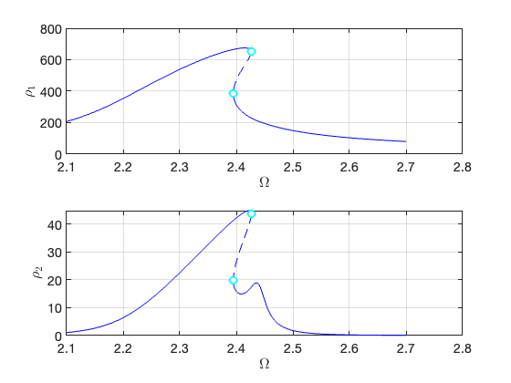  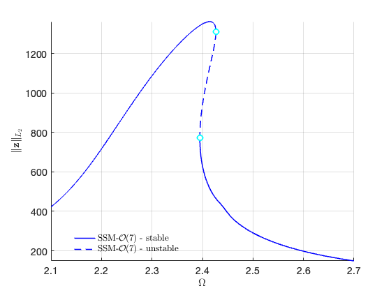 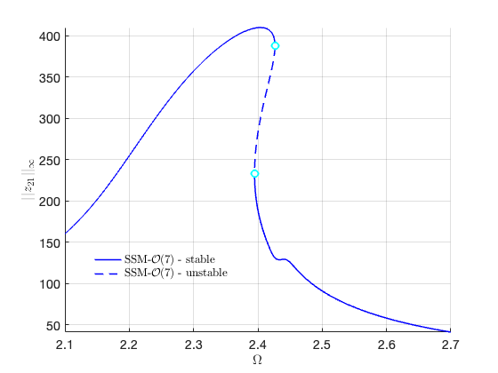
<h2>FRC from Order 9 SSM Computation</h2>
<pre class="codeoutput">

Due to (near) outer resonance, the exisitence of the manifold is questionable and the underlying computation may suffer.
Attempting manifold computation
Manifold computation time at order 2 = 00:00:00
Estimated memory usage at order  2 = 8.66E-02 MB
Manifold computation time at order 3 = 00:00:00
Estimated memory usage at order  3 = 1.49E-01 MB
Manifold computation time at order 4 = 00:00:00
Estimated memory usage at order  4 = 3.09E-01 MB
Manifold computation time at order 5 = 00:00:00
Estimated memory usage at order  5 = 5.65E-01 MB
Manifold computation time at order 6 = 00:00:00
Estimated memory usage at order  6 = 1.04E+00 MB
Manifold computation time at order 7 = 00:00:00
Estimated memory usage at order  7 = 1.75E+00 MB
Manifold computation time at order 8 = 00:00:01
Estimated memory usage at order  8 = 2.88E+00 MB
Manifold computation time at order 9 = 00:00:03
Estimated memory usage at order  9 = 4.47E+00 MB

Equation solved.

fsolve completed because the vector of function values is near zero
as measured by the value of the function tolerance, and
the problem appears regular as measured by the gradient.


 Run='isol-ld-9.ep': Continue equilibria along primary branch.

    STEP   DAMPING               NORMS              COMPUTATION TIMES
  IT SIT     GAMMA     ||d||     ||f||     ||U||   F(x)  DF(x)  SOLVE
   0                          1.24e-12  6.52e+02    0.0    0.0    0.0

 STEP      TIME        ||U||  LABEL  TYPE            om         rho1         rho2          th1          th2          eps
    0  00:00:00   6.5248e+02      1  EP      2.2562e+00   4.6110e+02   1.4398e+01   5.9323e+00   2.5457e+00   7.0000e-04
   10  00:00:00   6.1379e+02      2          2.2419e+00   4.3379e+02   1.2024e+01   5.9866e+00   2.7438e+00   7.0000e-04
   20  00:00:00   5.1393e+02      3          2.2051e+00   3.6326e+02   6.9994e+00   6.1005e+00   3.1723e+00   7.0000e-04
   30  00:00:00   4.1402e+02      4          2.1650e+00   2.9264e+02   3.5056e+00   6.1822e+00   3.4951e+00   7.0000e-04
   40  00:00:00   3.1409e+02      5          2.1139e+00   2.2196e+02   1.3887e+00   6.2362e+00   3.7207e+00   7.0000e-04
   43  00:00:00   2.9273e+02      6  EP      2.1000e+00   2.0685e+02   1.0898e+00   6.2446e+00   3.7571e+00   7.0000e-04

 STEP      TIME        ||U||  LABEL  TYPE            om         rho1         rho2          th1          th2          eps
    0  00:00:00   6.5248e+02      7  EP      2.2562e+00   4.6110e+02   1.4398e+01   5.9323e+00   2.5457e+00   7.0000e-04
   10  00:00:00   6.9115e+02      8          2.2707e+00   4.8838e+02   1.7014e+01   5.8714e+00   2.3273e+00   7.0000e-04
   20  00:00:00   7.9087e+02      9          2.3102e+00   5.5864e+02   2.4913e+01   5.6760e+00   1.6471e+00   7.0000e-04
   30  00:00:00   8.9046e+02     10          2.3550e+00   6.2866e+02   3.4666e+01   5.3935e+00   7.0160e-01   7.0000e-04
   40  00:00:00   9.8125e+02     11          2.4119e+00   6.9226e+02   4.6608e+01   4.8314e+00  -1.0962e+00   7.0000e-04
   50  00:00:00   9.8406e+02     12          2.4185e+00   6.9419e+02   4.7556e+01   4.7173e+00  -1.4505e+00   7.0000e-04
   60  00:00:01   9.8401e+02     13          2.4195e+00   6.9414e+02   4.7665e+01   4.6974e+00  -1.5120e+00   7.0000e-04
   70  00:00:01   9.8327e+02     14          2.4216e+00   6.9361e+02   4.7853e+01   4.6511e+00  -1.6545e+00   7.0000e-04
   79  00:00:01   9.5071e+02     15  FP      2.4287e+00   6.7063e+02   4.6453e+01   4.3069e+00  -2.6978e+00   7.0000e-04
   79  00:00:01   9.5068e+02     16  SN      2.4287e+00   6.7060e+02   4.6450e+01   4.3066e+00  -2.6985e+00   7.0000e-04
   80  00:00:01   9.3855e+02     17          2.4284e+00   6.6206e+02   4.5616e+01   4.2381e+00  -2.9028e+00   7.0000e-04
   90  00:00:01   8.3864e+02     18          2.4186e+00   5.9174e+02   3.8269e+01   3.8660e+00  -3.9917e+00   7.0000e-04
  100  00:00:01   7.3873e+02     19          2.4068e+00   5.2139e+02   3.1232e+01   3.6296e+00  -4.6624e+00   7.0000e-04
  110  00:00:01   6.3880e+02     20          2.3979e+00   4.5096e+02   2.4905e+01   3.4598e+00  -5.1307e+00   7.0000e-04
  120  00:00:01   5.4709e+02     21  SN      2.3948e+00   3.8627e+02   1.9941e+01   3.3453e+00  -5.4426e+00   7.0000e-04
  120  00:00:01   5.3884e+02     22          2.3948e+00   3.8046e+02   1.9545e+01   3.3366e+00  -5.4665e+00   7.0000e-04
  130  00:00:01   4.3887e+02     23          2.4007e+00   3.0985e+02   1.5714e+01   3.2500e+00  -5.7305e+00   7.0000e-04
  140  00:00:01   3.3921e+02     24          2.4217e+00   2.3919e+02   1.6330e+01   3.1958e+00  -6.1650e+00   7.0000e-04
  150  00:00:02   2.7444e+02     25          2.4513e+00   1.9350e+02   1.1892e+01   3.1846e+00  -7.7475e+00   7.0000e-04
  160  00:00:02   1.7803e+02     26          2.5429e+00   1.2553e+02   6.5987e-01   3.1516e+00  -8.5354e+00   7.0000e-04
  167  00:00:02   1.1390e+02     27  EP      2.7000e+00   7.9973e+01   7.3554e-02   3.1447e+00  -8.6053e+00   7.0000e-04

the forcing frequency 2.1000e+00 is nearly resonant with the eigenvalue -3.8056e-04 + i2.2562e+00
the forcing frequency 2.1009e+00 is nearly resonant with the eigenvalue -3.8056e-04 + i2.2562e+00
the forcing frequency 2.1076e+00 is nearly resonant with the eigenvalue -3.8056e-04 + i2.2562e+00
...
</pre>
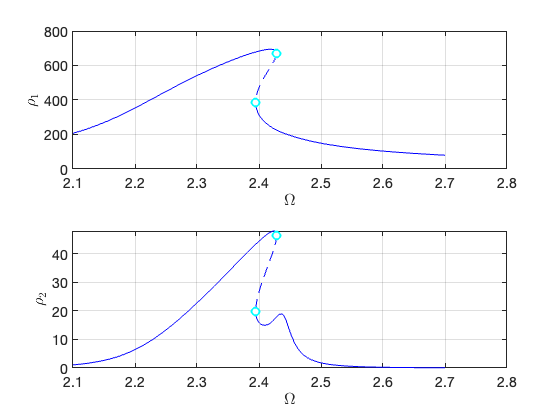 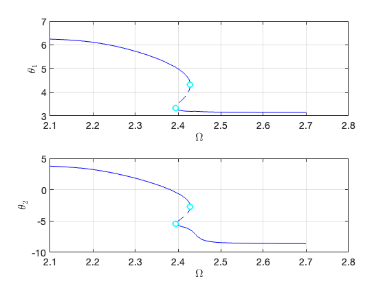 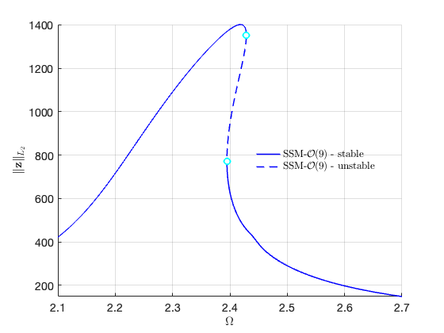 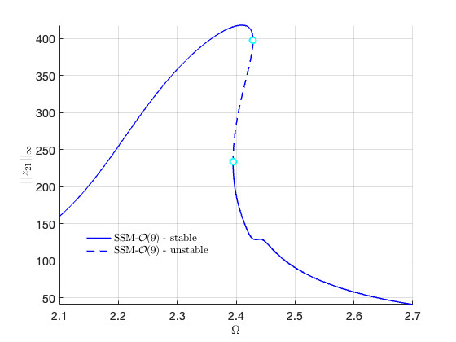
<h2>FRC from Order 11 SSM Computation</h2>
<pre class="codeoutput">

Due to (near) outer resonance, the exisitence of the manifold is questionable and the underlying computation may suffer.
Attempting manifold computation
Manifold computation time at order 2 = 00:00:00
Estimated memory usage at order  2 = 9.73E-02 MB
Manifold computation time at order 3 = 00:00:00
Estimated memory usage at order  3 = 1.59E-01 MB
Manifold computation time at order 4 = 00:00:00
Estimated memory usage at order  4 = 3.20E-01 MB
Manifold computation time at order 5 = 00:00:00
Estimated memory usage at order  5 = 5.75E-01 MB
Manifold computation time at order 6 = 00:00:00
Estimated memory usage at order  6 = 1.05E+00 MB
Manifold computation time at order 7 = 00:00:00
Estimated memory usage at order  7 = 1.76E+00 MB
Manifold computation time at order 8 = 00:00:01
Estimated memory usage at order  8 = 2.89E+00 MB
Manifold computation time at order 9 = 00:00:03
Estimated memory usage at order  9 = 4.48E+00 MB
Manifold computation time at order 10 = 00:00:06
Estimated memory usage at order  10 = 6.81E+00 MB
Manifold computation time at order 11 = 00:00:13
Estimated memory usage at order  11 = 9.91E+00 MB

Equation solved.

fsolve completed because the vector of function values is near zero
as measured by the value of the function tolerance, and
the problem appears regular as measured by the gradient.


 Run='isol-ld-11.ep': Continue equilibria along primary branch.

    STEP   DAMPING               NORMS              COMPUTATION TIMES
  IT SIT     GAMMA     ||d||     ||f||     ||U||   F(x)  DF(x)  SOLVE
   0                          1.77e-12  6.52e+02    0.0    0.0    0.0

 STEP      TIME        ||U||  LABEL  TYPE            om         rho1         rho2          th1          th2          eps
    0  00:00:00   6.5216e+02      1  EP      2.2562e+00   4.6087e+02   1.4385e+01   5.9323e+00   2.5458e+00   7.0000e-04
   10  00:00:00   6.1347e+02      2          2.2419e+00   4.3357e+02   1.2010e+01   5.9868e+00   2.7445e+00   7.0000e-04
   20  00:00:00   5.1361e+02      3          2.2050e+00   3.6304e+02   6.9869e+00   6.1008e+00   3.1734e+00   7.0000e-04
   30  00:00:00   4.1370e+02      4          2.1649e+00   2.9242e+02   3.4969e+00   6.1824e+00   3.4959e+00   7.0000e-04
   40  00:00:00   3.1378e+02      5          2.1137e+00   2.2174e+02   1.3839e+00   6.2364e+00   3.7213e+00   7.0000e-04
   43  00:00:00   2.9273e+02      6  EP      2.1000e+00   2.0685e+02   1.0898e+00   6.2446e+00   3.7571e+00   7.0000e-04

 STEP      TIME        ||U||  LABEL  TYPE            om         rho1         rho2          th1          th2          eps
    0  00:00:00   6.5216e+02      7  EP      2.2562e+00   4.6087e+02   1.4385e+01   5.9323e+00   2.5458e+00   7.0000e-04
   10  00:00:00   6.9084e+02      8          2.2708e+00   4.8815e+02   1.7003e+01   5.8711e+00   2.3262e+00   7.0000e-04
   20  00:00:00   7.9055e+02      9          2.3108e+00   5.5841e+02   2.4912e+01   5.6726e+00   1.6364e+00   7.0000e-04
   30  00:00:00   8.9013e+02     10          2.3576e+00   6.2844e+02   3.4689e+01   5.3738e+00   6.4058e-01   7.0000e-04
   40  00:00:01   9.6740e+02     11          2.4138e+00   6.8254e+02   4.5132e+01   4.7922e+00  -1.2080e+00   7.0000e-04
   50  00:00:01   9.6828e+02     12          2.4178e+00   6.8313e+02   4.5627e+01   4.7192e+00  -1.4339e+00   7.0000e-04
   60  00:00:01   9.6816e+02     13          2.4190e+00   6.8304e+02   4.5756e+01   4.6942e+00  -1.5111e+00   7.0000e-04
   70  00:00:01   9.6605e+02     14          2.4227e+00   6.8152e+02   4.6042e+01   4.6061e+00  -1.7820e+00   7.0000e-04
   77  00:00:01   9.3684e+02     15  SN      2.4284e+00   6.6090e+02   4.4933e+01   4.2930e+00  -2.7314e+00   7.0000e-04
   77  00:00:01   9.3682e+02     16  FP      2.4284e+00   6.6088e+02   4.4932e+01   4.2928e+00  -2.7320e+00   7.0000e-04
   80  00:00:01   8.9925e+02     17          2.4262e+00   6.3442e+02   4.2461e+01   4.0935e+00  -3.3250e+00   7.0000e-04
   90  00:00:01   7.9933e+02     18          2.4143e+00   5.6407e+02   3.5371e+01   3.7683e+00  -4.2697e+00   7.0000e-04
  100  00:00:02   6.9941e+02     19          2.4029e+00   4.9369e+02   2.8635e+01   3.5574e+00  -4.8628e+00   7.0000e-04
  110  00:00:02   5.9947e+02     20          2.3959e+00   4.2323e+02   2.2661e+01   3.4066e+00  -5.2753e+00   7.0000e-04
  116  00:00:02   5.4681e+02     21  SN      2.3948e+00   3.8608e+02   1.9927e+01   3.3450e+00  -5.4432e+00   7.0000e-04
  120  00:00:02   4.9951e+02     22          2.3958e+00   3.5269e+02   1.7797e+01   3.2986e+00  -5.5741e+00   7.0000e-04
  130  00:00:02   3.9955e+02     23          2.4067e+00   2.8204e+02   1.5009e+01   3.2246e+00  -5.8445e+00   7.0000e-04
  140  00:00:02   3.0052e+02     24          2.4371e+00   2.1151e+02   1.8960e+01   3.1923e+00  -6.8773e+00   7.0000e-04
  150  00:00:02   2.3992e+02     25          2.4745e+00   1.6935e+02   4.0995e+00   3.1668e+00  -8.2781e+00   7.0000e-04
  160  00:00:02   1.4039e+02     26          2.6169e+00   9.8812e+01   1.9757e-01   3.1468e+00  -8.5863e+00   7.0000e-04
  163  00:00:03   1.1390e+02     27  EP      2.7000e+00   7.9973e+01   7.3554e-02   3.1447e+00  -8.6053e+00   7.0000e-04

the forcing frequency 2.1000e+00 is nearly resonant with the eigenvalue -3.8056e-04 + i2.2562e+00
the forcing frequency 2.1007e+00 is nearly resonant with the eigenvalue -3.8056e-04 + i2.2562e+00
the forcing frequency 2.1074e+00 is nearly resonant with the eigenvalue -3.8056e-04 + i2.2562e+00

</pre>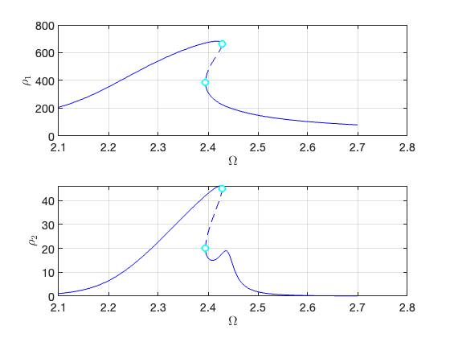  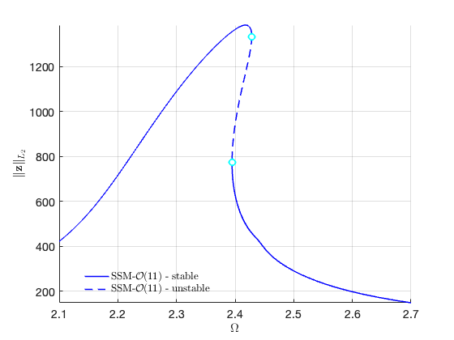 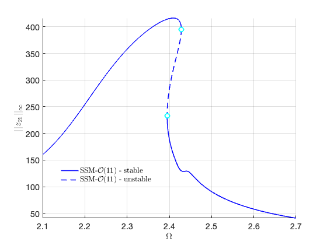 <h2>Convergence of FRCs</h2>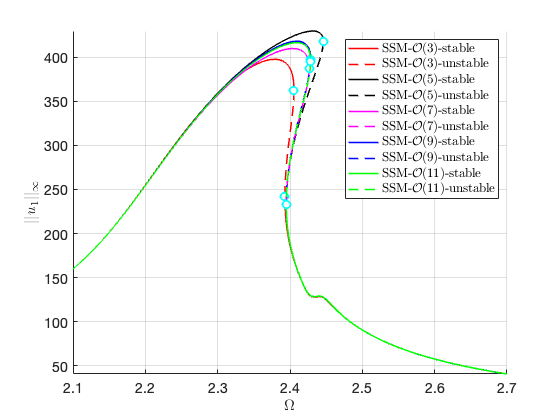 <p class="footer"><br/><a href="https://www.mathworks.com/products/matlab/">Published with MATLAB® R2023a</a><br/></p></div><!--
##### SOURCE BEGIN #####
%% Nonlinear Timoshenko beam
%
%%
% We compute the FRC from a 4D-SSM for a geometrically nonlinear Timoshenko
% Beam.

clear all; 
% Generate model

nElements = 4;
isViscoelastic = false;
[M,C,K,fnl,fext,outdof] = build_model(nElements,isViscoelastic);
n = length(M);

node_idx = nElements/4+1;
mDOFs = 5*(node_idx-1)-3+[1, 4]; % translational DOFs
rDOF = 5*(node_idx-1)-3+3;       % rotational DOF

Ma = M;
mass = 80; 
moment_of_inertia = mass*250*250;
Ma(mDOFs,mDOFs) = Ma(mDOFs,mDOFs) + mass*eye(2,2); % adding mass to translational DOF
Ma(rDOF,rDOF)   = Ma(rDOF,rDOF)+moment_of_inertia;
% Dynamical system setup

DS = <a href="../../../Library/DynamicalSystem/DynamicalSystem.html">DynamicalSystem</a>();
set(DS,'M',Ma,'C',C,'K',K,'fnl',fnl);
set(DS.<a href="../../../Library/Features/Options/Options.html">Options</a>,'Emax',5,'Nmax',10,'notation','multiindex')
epsilon = 7e-4;
kappas = [-1; 1];
coeffs = [fext fext]/2;
DS.<a href="../../../Library/DynamicalSystem/add_forcing.html">add_forcing</a>(coeffs, kappas, epsilon);
% Linear Modal analysis and SSM setup

[V,D,W] = DS.<a href="../../../Library/DynamicalSystem/linear_spectral_analysis.html">linear_spectral_analysis</a>();
%% 
% *Choose Master subspace*

S = <a href="../../../Library/SSM/SSM.html">SSM</a>(DS);
set(S.<a href="../../../Library/Features/Options/Options.html">Options</a>, 'reltol', 0.1,'notation','multiindex')
masterModes = [1,2,3,4]; 
S.<a href="../../../Library/Manifold/choose_E.html">choose_E</a>(masterModes);
% Forced response curves using SSMs
%% 
% Setup options

set(S.<a href="../../../Library/Features/Options/Options.html">Options</a>, 'reltol', 0.5,'IRtol',0.08,'notation', 'multiindex','contribNonAuto',true)
set(S.<a href="../../../Library/Features/Options/Options.html">FRCOptions</a>, 'nt', 2^8, 'nRho', 200, 'nPar', 200, 'nPsi', 100, 'rhoScale', 2 )
set(S.contOptions, 'h_max', 10,'PtMX',350,'h_min',1e-3);
set(S.<a href="../../../Library/Features/Options/Options.html">FRCOptions</a>, 'outdof',outdof+1)
%% 
% Choose frequency range

omegaRange = [2.1, 2.7];
%% Primary resonance of the first mode
% We first consider the case that $\Omega\approx\omega_1$.

set(S.<a href="../../../Library/Features/Options/Options.html">FRCOptions</a>, 'nCycle',500, 'initialSolver', 'fsolve');
set(S.<a href="../../../Library/Features/Options/Options.html">FRCOptions</a>, 'coordinates', 'polar');

% computation at order 3
order = 3; % Approximation order
start = tic;
FRC_LD_O3 = S.<a href="../../../Library/SSM/SSM_isol2ep.html">SSM_isol2ep</a>('isol-ld-3',masterModes, order, [1 3], 'freq', omegaRange,outdof+1);
timings.FRC_ND_O3 = toc(start);

% increase order to check convergence
sol = ep_read_solution('isol-ld-3.ep',1);
start = tic;
FRC_LD_O5 = S.<a href="../../../Library/SSM/SSM_isol2ep.html">SSM_isol2ep</a>('isol-ld-5',masterModes, order+2, [1 3],...
    'freq', omegaRange,outdof+1,{sol.p,sol.x});
timings.FRC_ND_O5 = toc(start);

start = tic;
FRC_LD_O7 = S.<a href="../../../Library/SSM/SSM_isol2ep.html">SSM_isol2ep</a>('isol-ld-7',masterModes, order+4, [1 3],...
    'freq', omegaRange,outdof+1,{sol.p,sol.x});
timings.FRC_ND_O7 = toc(start);

start = tic;
FRC_LD_O9 = S.<a href="../../../Library/SSM/SSM_isol2ep.html">SSM_isol2ep</a>('isol-ld-9',masterModes, order+6, [1 3],...
    'freq', omegaRange,outdof+1,{sol.p,sol.x});
timings.FRC_ND_O9 = toc(start);

FRC_LD_O11 = S.<a href="../../../Library/SSM/SSM_isol2ep.html">SSM_isol2ep</a>('isol-ld-11',masterModes, order+8, [1 3],...
    'freq', omegaRange,outdof+1,{sol.p,sol.x});
timings.FRC_ND_O9 = toc(start);

% plot results at the same figure
FRCs = {FRC_LD_O3,FRC_LD_O5,FRC_LD_O7,FRC_LD_O9,FRC_LD_O11};
thm = struct();
thm.SN = {'LineStyle', 'none', 'LineWidth', 2, ...
  'Color', 'cyan', 'Marker', 'o', 'MarkerSize', 8, 'MarkerEdgeColor', ...
  'cyan', 'MarkerFaceColor', 'white'};
thm.HB = {'LineStyle', 'none', 'LineWidth', 2, ...
  'Color', 'black', 'Marker', 's', 'MarkerSize', 8, 'MarkerEdgeColor', ...
  'black', 'MarkerFaceColor', 'white'};
color = {'r','k','m','b','g'};
figure(30);
ax1 = gca;
for k=1:5
    FRC = FRCs{k};
    SNidx = FRC.SNidx;
    HBidx = FRC.HBidx;
    FRC.st = double(FRC.st);
    FRC.st(HBidx) = nan;
    FRC.st(SNidx) = nan;
    % color
    ST = cell(2,1);
    ST{1} = {[color{k},'REPLACE_WITH_DASH_DASH'],'LineWidth',1.5}; % unstable
    ST{2} = {[color{k},'-'],'LineWidth',1.5};  % stable
    legs = ['SSM-$\mathcal{O}(',num2str(2*k+1),')$-unstable'];
    legu = ['SSM-$\mathcal{O}(',num2str(2*k+1),')$-stable'];
    hold(ax1,'on');
    <a href="../../../Library/Features/misc/plot_stab_lines.html">plot_stab_lines</a>(FRC.om,FRC.Aout_<a href="../../../Library/Features/frc/frc.html">frc</a>(:,1),FRC.st,ST,legs,legu);
    SNfig = plot(FRC.om(SNidx),FRC.Aout_<a href="../../../Library/Features/frc/frc.html">frc</a>(SNidx,1),thm.SN{:});
    set(get(get(SNfig,'Annotation'),'LegendInformation'),...
    'IconDisplayStyle','off');
    HBfig = plot(FRC.om(HBidx),FRC.Aout_<a href="../../../Library/Features/frc/frc.html">frc</a>(HBidx,1),thm.HB{:});
    set(get(get(HBfig,'Annotation'),'LegendInformation'),...
    'IconDisplayStyle','off');   
    xlabel('$\Omega$','Interpreter','latex'); 
    ylabel('$||u_1||_{\infty}$','Interpreter','latex'); 
    set(gca,'FontSize',14);
    grid on; axis tight; 
end
##### SOURCE END #####
--></body></html>